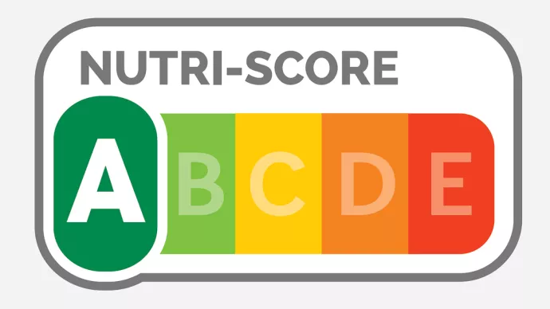

Projet d'analyse de données "Nutriscore"
Extraction, nettoyage et visualisation de données en Open Source relatives au système d'analyse nutritionnelle Nutriscore.

1. Extraction et structuration des données
En utilisant le langage SQL, j'ai extrait et ordonné des données volumineuses, fiables et pertinentes issues de bases de données publiques en open source. Ce processus a nécessité la mise en place de requêtes ciblées pour isoler et nettoyer les informations nutritionnelles essentielles des produits alimentaires concernés par le Nutriscore
2. Modélisation et Tendances
Grâce au langage R, j'ai exploité ces données triées pour générer des graphiques et des tableaux analytiques. Ces livrables mettent en lumière les grandes tendances nutritionnelles de certaines catégories de produits, facilitant ainsi la compréhension des facteurs qui influencent l'attribution des scores.